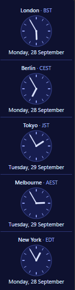

v2.1.0 Windows macOS Linux Free and open source
TimeRibbon
A simple ribbon of world clocks, horizontal or vertical. What time and what day is it where the people you talk to are? One clock per place you choose, each with its own local time, weekday and date, in a small frameless ribbon you can put anywhere on any monitor.
What it does
Every place's own time. Nothing to set by hand.
A clock per place
Each clock shows its place, its local time, its weekday and date there and its zone's abbreviation (such as EDT). Where a zone has no letters it shows the offset from UTC instead (such as UTC+5:45).
Daylight saving, followed
Times come from the time zone rules themselves, built into the program. When the clocks change somewhere, its clock changes with them.
East from Greenwich
The ribbon runs east round the world from Greenwich: London first, then places further ahead; places behind UTC such as New York come last. The order is worked out afresh as the ribbon updates, so daylight saving can move it.
Find any place
Search the zones of the tz database by city, zone or country. Label a clock whatever you like: Manchester can borrow London's clock under its own name.
Your way round
Digital or analogue; large or small; ten colour schemes from Classic to Neon, Ocean, Ruby and Contrast; 12 hour or 24 hour; the date in words or as 28/09/2026, 09/28/2026 or 2026/09/28; horizontal or vertical; light, dark or following the system. Every choice applies at once, with no Save step.
Fits, then scrolls
The ribbon is as long as its clocks until it reaches the edge of the display. Past that its clocks scroll rather than shrink or wrap.
Stays where you leave it
Drag it by any empty part onto any monitor and it opens there next time. Add or remove a clock and it re-centres along its length on that display. Position centres it flush on an edge of its display; choosing horizontal sends it to the top edge and vertical to the right.
Out of the way
No title bar, no border and no taskbar or Dock button. It can stay on top of other windows and start when you sign in; both are yours to turn on.
Two menus, one list
The icon in the notification area, the menu bar or the system tray and a right-click on the ribbon both offer Add clock, Settings, Style, Colour, Orientation, Position, Always on top, Help (About, Licence and Check for updates), Hide and Exit. When the ribbon is hidden the icon offers Show in place of Hide.
Knows when there is more
When a newer release is out, the ribbon says so and offers the download for your platform, a skip for that version or later. Help checks at any time.
A look
Five places, one glance.


What you are looking at
- Two looks, one ribbon: analogue in Indigo and digital in Neon, both small and vertical. Style, colour and orientation come from the menus; size from Settings.
- London first, then Berlin, Tokyo and Melbourne as the ribbon heads east.
- New York last, since it is behind UTC.
- Different days: Tokyo and Melbourne are already on tomorrow.
What it does not do
- The internet, beyond one question. Its only network request asks GitHub for the latest release, at start and once a day, sending nothing about you or your clocks. The donate button and Download hand their addresses to your browser.
- Planning. No calendar, meetings, reminders or alarms. It shows the time; it plans nothing.
- People. A clock is a place, never a person.
- Seconds. Hours and minutes only.
- Your system clock. It reads the time; it never changes it.
Download
Install it for yourself.
Version 2.1.0Windows
Windows 10 or 11
Download for WindowsRun TimeRibbonSetup.exe and choose Install. It
installs for your account only, so Windows never asks for administrator
rights. It offers a Start Menu entry, a Desktop shortcut and Start with
Windows.
Run the same program again to update, repair or uninstall. You can also remove it from the Apps list in Windows Settings; your clocks stay unless you tick Also forget my settings.
macOS
macOS 12 or later, Apple Silicon
Download for macOSOpen TimeRibbon.dmg and drag TimeRibbon to
Applications. Its icon sits in the menu bar; a click opens its menu.
To remove it, turn off Open at Login in its Settings, then
move it to the Bin. Your clocks stay in
~/Library/Application Support/TimeRibbon.
Linux
Any desktop that runs Flatpaks
Download for LinuxInstall it for your account with
flatpak install --user timeribbon.flatpak, then start it
from your applications or with
flatpak run uk.codecrafter.TimeRibbon.
To remove it, turn off Start when I sign in in its Settings,
then run flatpak uninstall --user uk.codecrafter.TimeRibbon.
What is new in this release · All releases · Source on GitHub
Supporting TimeRibbon
Free. It stays free.
There is no paid tier, no licence key and no feature held back behind a donation. If TimeRibbon saves you working out what time it is somewhere else, a contribution supports its maintenance. The same button sits at the foot of Settings.
 Donate
Donate